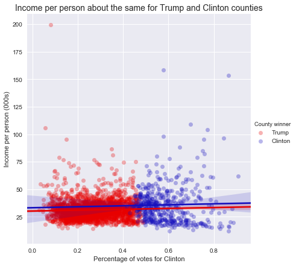
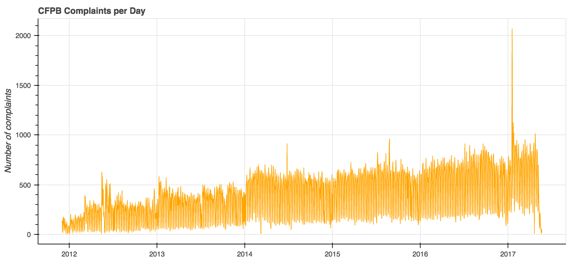
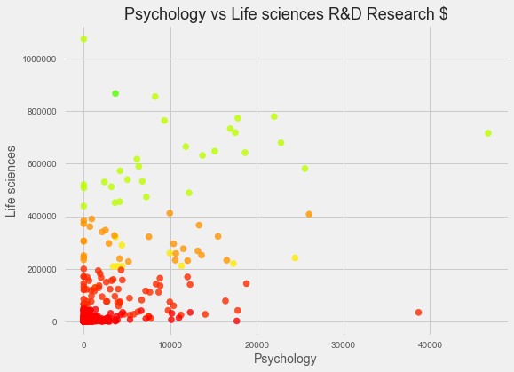

Portfolio
Voting with their Tax Returns
An analysis of the relationship between deductions taken on income tax returns and county-level voting patterns in the 2016 election.

Topic modeling with the CFPB database
Natural language processing analysis of the topics discussed in complaints to the Consumer Financial Protection Bureau.

Clustering Higher Ed Research Spending
Used DBSCAN and hierarchical clustering methods to sort more than 300 universities according to the amount of research funding they receive by branch of the university.
